A calmer, smarter rebuild for Acupuncture Health Center
How a clinic website update turned a familiar legacy site into a modern, mobile-friendly, search-ready experience for patients in Edina, Minnesota.
Acupuncture Health Center is a long-running clinic in Edina, MN. The old website already had the essentials: services, practitioner information, testimonials, location, and contact details. The rebuild was not about inventing a louder brand. It was about making the clinic feel as careful online as the care it provides in person.
The prototype at yyu-ds.github.io/acupuncturehc-site-prototype focuses on three business outcomes: a more polished first impression, a page structure that search engines and AI agents can understand, and stronger trust signals from Google reviews.
1. A more modern first impression
The current site uses a traditional WordPress/Divi layout with a large logo header, pale floral photography, and small navigation. It is calm, but it feels more like a legacy brochure than a current clinic experience.
The new design keeps the clinic's quiet, wellness-oriented tone, but sharpens it with a cleaner visual system: stronger type hierarchy, warmer spacing, clearer calls to action, a sticky phone number, and a hero that immediately says who the clinic is and where it serves.
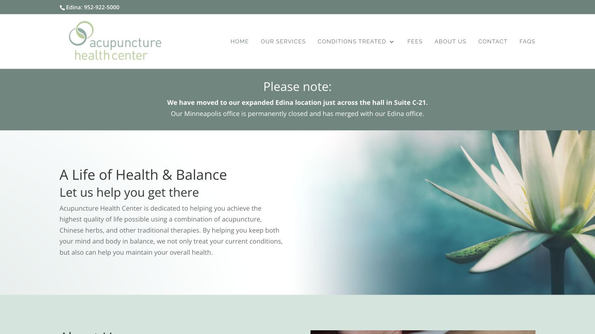
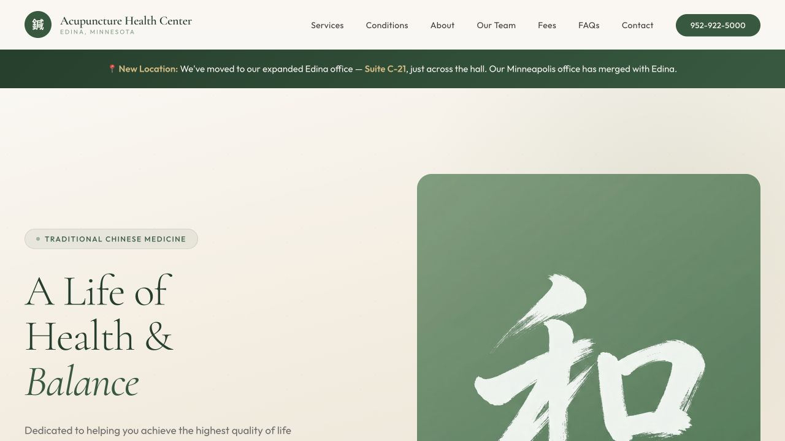
Mobile mattered even more. Many patients will find a clinic from a phone, not from a desktop monitor. The prototype was designed to keep the page readable and useful from top to bottom: compact navigation, thumb-friendly buttons, stacked content, schedule cards, and a finished footer that still gives the visitor a next step.
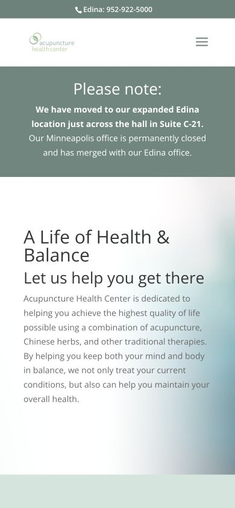
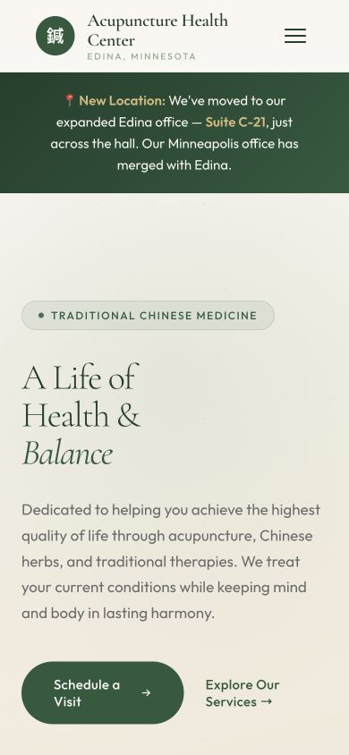
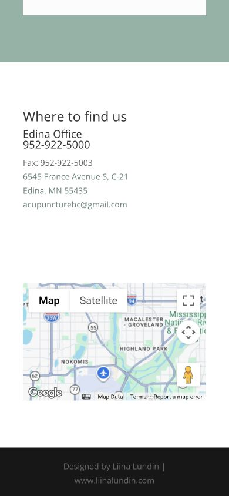
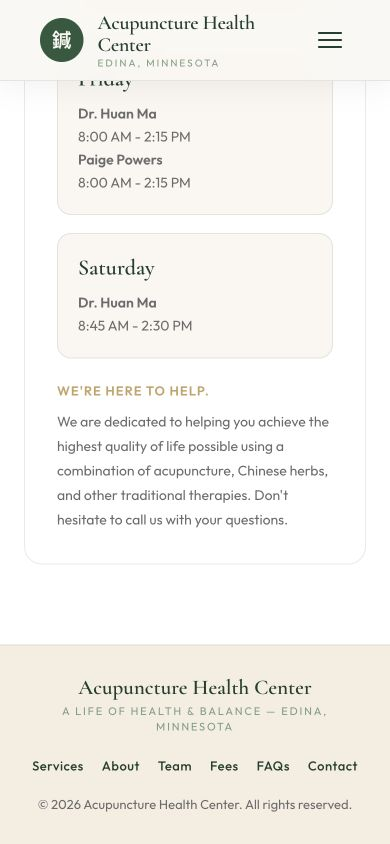
2. SEO and AI-agent optimization
Good SEO is not just a plugin setting. For a local clinic, it means giving both humans and machines a clean answer to practical questions: What services do you provide? What conditions do you treat? Where are you located? Who are the practitioners? What does a first visit cost? How can someone schedule?
The old site answered many of those questions, but the information was spread across several pages and a nested navigation structure. The prototype keeps the important content crawlable on one strong page while still preserving section navigation for people.
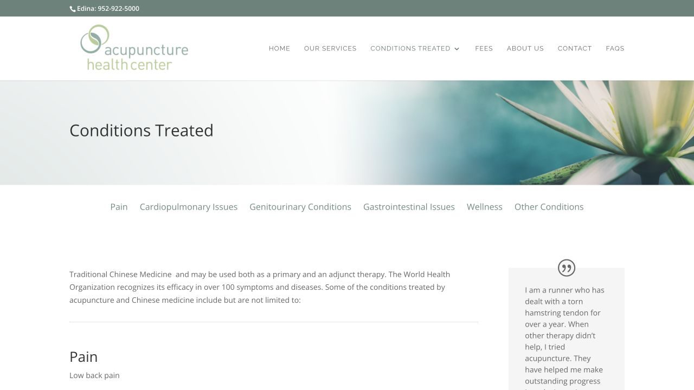
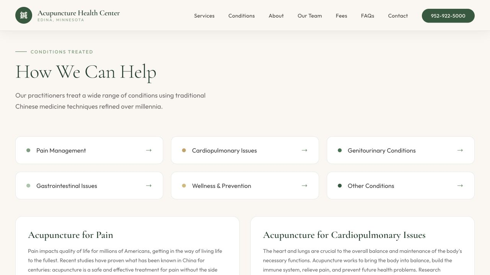
Under the hood, the prototype also adds the signals modern discovery systems expect: a focused meta description, canonical URL, social preview metadata, LocalBusiness/MedicalClinic structured data, aggregate rating data, and FAQPage schema. That matters because the next visitor may not arrive from a classic blue link. They may arrive through Google snippets, Maps, an AI assistant, or a local search workflow that is trying to summarize the clinic before the user ever clicks.
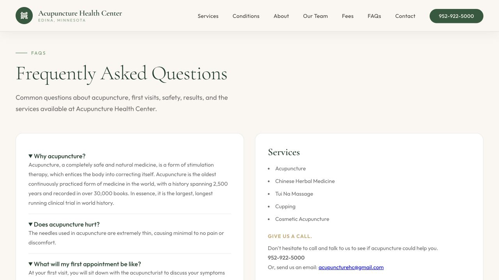
3. Google reviews as trust content
The old homepage included patient testimonials, which is valuable social proof. The rebuild keeps that warmth and adds a more recognizable trust signal: the clinic's Google rating, review count, and a direct Maps link.
This is not decoration. For a local healthcare-adjacent service, trust is part of conversion. A visitor deciding whether to call is looking for proof that other patients had good experiences. Surfacing the rating in the hero and testimonial section helps the page answer that concern before doubt has time to grow.
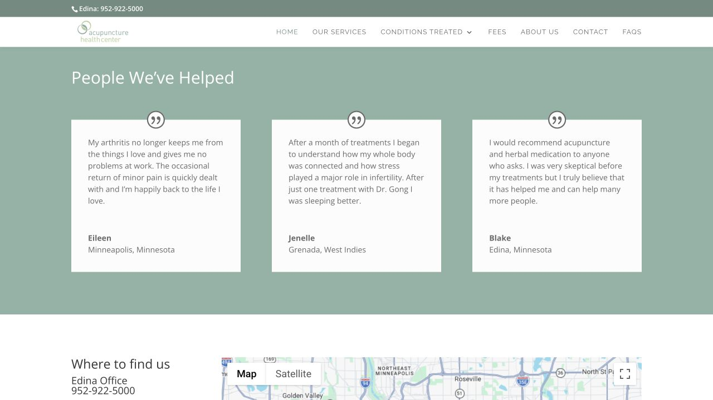
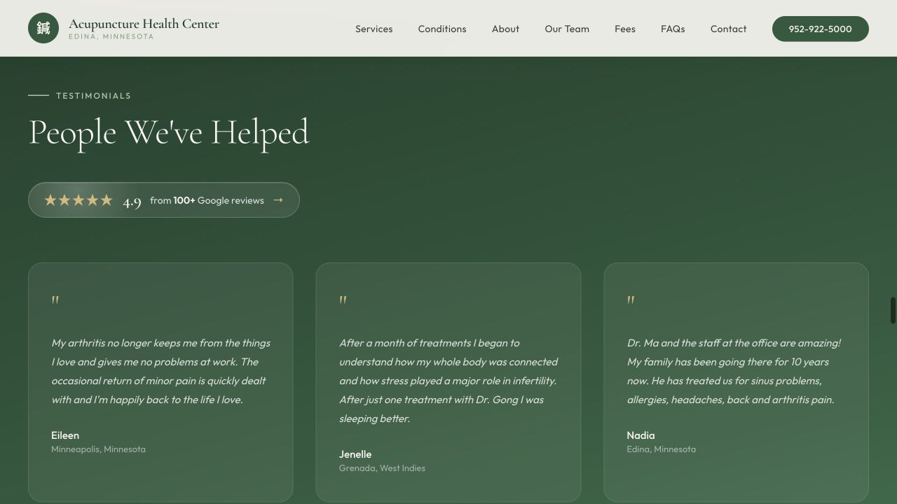
The result
The rebuild gives Acupuncture Health Center a site that feels more current without becoming loud. It respects the clinic's calm voice, improves the mobile journey, makes key business information easier to scan, and gives search engines and AI agents better structured context.
A successful website rebuild is not only prettier. It should make the business easier to understand, easier to trust, and easier to contact.
That is the kind of work we like: design taste, business clarity, and technical implementation all pulling in the same direction.